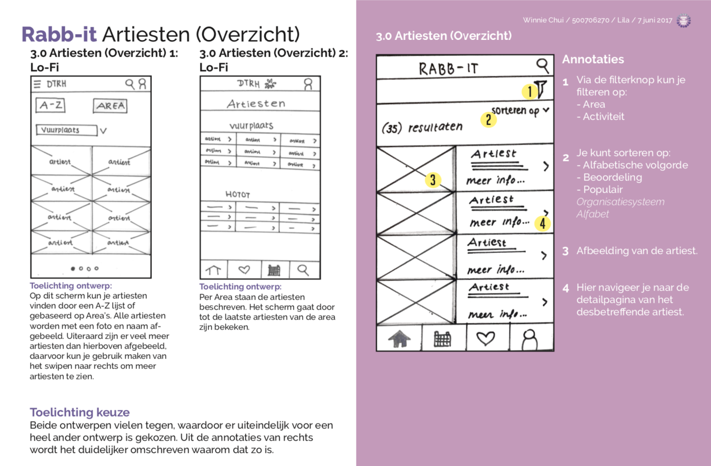

Down The Rabbit Hole
Voor het vak Informatie Architectuur (Propedeuse, 2017) ben ik aan de slag gegaan met het ontwerpen van een app voor het festival: Down The Rabbit Hole. De focus ligt bij het analyseren van de gebruiker en zijn doelen, structureren van de content en functies binnen de app en ontwerpen van een gebruiksvriendelijke interface. Dit heb ik vastgelegd in een ontwerpdocument. Hieronder een voorbeeld van hoe ik te werk ben gegaan voor de verschillende opdrachten van het vak:
Dit vak heeft mij onder andere geleerd om wireframes te schetsen aan de hand van user- en businessgoals. Bekijk hier mijn ontwerpdocument.